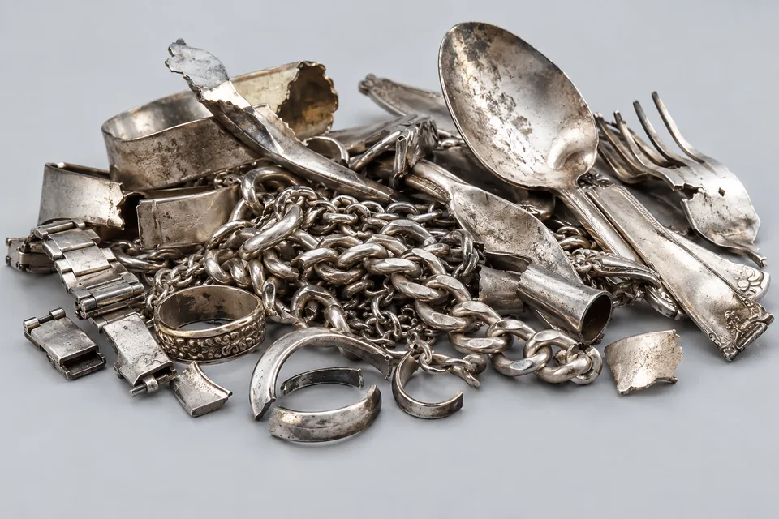

Zaktualizowano:
Komplet srebrnych sztućców warto najpierw ocenić jako zestaw użytkowy lub kolekcjonerski, a dopiero później jako źródło metalu. Wartość może zależeć od producenta, wzoru, liczby elementów i zachowania kompletu. Pojedyncza łyżka oraz zastawa w oryginalnej kasecie wymagają więc innego spojrzenia.
Z czego składa się komplet?
Rozłóż przedmioty według przeznaczenia: łyżki, widelce, noże, łyżeczki i elementy serwingowe. Policz sztuki w każdej grupie. Zwróć uwagę, czy wszystkie mają ten sam ornament i oznaczenia. Podobny wygląd nie gwarantuje wspólnego producenta ani jednakowej próby.
Spisz braki i uszkodzenia, ale nie naprawiaj ich prowizorycznie. Zachowaj etui, pudełko lub dokumenty rodzinne związane z zestawem. Dodatkowe informacje pomagają rozpoznać przedmiot, choć każdą ocenę trzeba oprzeć również na oględzinach samych wyrobów.
Które elementy nie są srebrnym stopem?
W nożach ostrze często jest stalowe, a rękojeść może być pusta lub wypełniona. W naczyniach występują drewniane uchwyty, szkło, wkłady i obciążenia. Ważenie całego zestawu nie daje zatem automatycznie masy srebra. Nie mnoż całkowitej masy wszystkich noży przez próbę z jednego trzonka.
Sprawdź również, czy oznaczenia dotyczą litego stopu, czy posrebrzenia. Skróty takie jak EPNS wskazują na wyrób posrebrzany, a liczby spotykane na platerach nie zawsze są próbą srebra. Wątpliwy znak warto sfotografować i pozostawić do identyfikacji.
Zachować komplet czy sprzedać metal?
Rozpoznawalny wzór, dobra kompletność i stan mogą przemawiać za wyceną całego zestawu. Poważnie uszkodzone, niekompletne elementy bywają rozpatrywane przede wszystkim według kruszcu. Nie ma jednej reguły, która pozwala rozstrzygnąć to bez zobaczenia rzeczy. Warto porównać możliwe drogi sprzedaży, zanim podejmiesz decyzję o rozdzieleniu kompletu.
Przygotowując skup srebra w Gorzowie, pokaż najpierw cały zestaw, a nie tylko najcięższe części. Nie zdejmuj ozdobnych zakończeń i nie usuwaj patyny ścierną pastą. W osobnym poradniku o wycenie starych sztućców opisujemy, jak liczyć masę stopu po odjęciu elementów niesrebrnych.
Transport bez uszkodzeń
Sztućce zabezpiecz przekładkami, a wystające elementy naczyń miękkim opakowaniem. Nie owijaj ostrza tak, aby jego końcówka naciskała na cienką rękojeść. Przy większej zastawie krótka lista zawartości ułatwia sprawdzenie, czy wszystkie elementy wróciły do opakowania po oględzinach.
Porównaj bieżące stawki odpowiedniej kategorii lub przejdź do kalkulatora orientacyjnej wyceny.